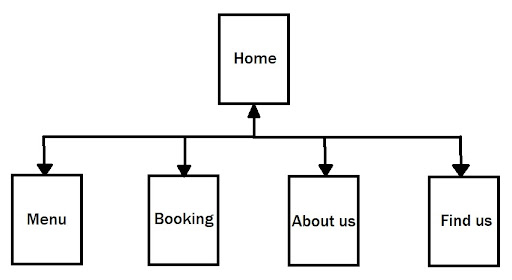
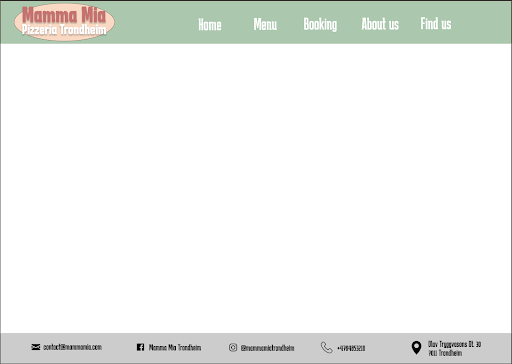
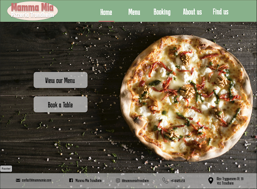
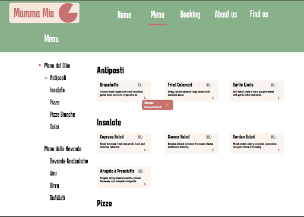
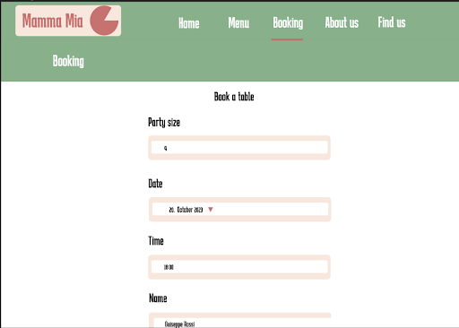
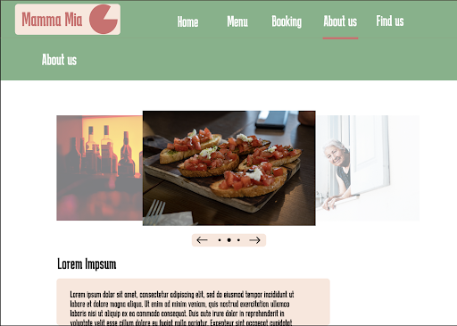
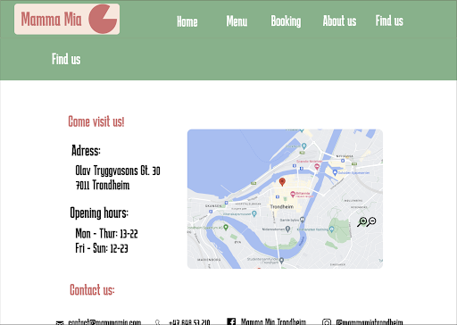

Client name: Mamma Mia Pizzeria (Imaginary)
The purpose for this website is to make it easy for potential customers to find information on the restaurant, including: the address, what is on the menu, contact information etc. The website will also have a reservation function embedded to let customers book a table for them and their party. The audience for this site should be the residents of (and tourists in) Trondheim who are especially interested in fine Italian pizza. The goal of this site will be to make an accessible and simple tool for restaurant goers to make their experience more seamless.
The navigation structure for this website will be what is described as clique as seen below.
This structure lets the user access any part of the site from any one page, meaning you can get to ex. “about us” from either of the other pages, this is the same no matter what page you are currently in. This will be possible through a navigation bar in the header of the website which will be visible at any point, a hamburger menu may also be utilized in a mobile version (or when space is limited). When the user first opens the website, they will land on the homepage and from there they will be able to navigate anywhere. We have chosen to use a clique structure because we believe this increases the ease of use for the user when perusing the site. They will not need to have multiple tabs open or return to the previous page for any reason, this will make the experience more seamless.
For our website we will use the same header and footer for every page as seen below.
Font: Karantina, 63px (logo “Mamma Mia”), 40px (logo “Pizzeria Trondheim”), 48px (navbar), 25px (footer). Font Roboto will also be used for general text in the website. Colors: Red (#D36D6D), Green (#7CB288), Gray (#B7B7B7), Beige (#FAE6DC), White (#ffffff), Black (#000000)
The Navbar will be in the top right of the page, and may be reduced to a hamburger menu if space is limited. A small red line will appear under the current page you are in on the navbar and when hovering your mouse over the other options in the navbar the text will change to a slightly different color to indicate that you are about to select that page.
The home page will be the first page the user sees. It will not throw too much information on the user, only a background picture for aesthetics, and two buttons: one for the menu and one for booking a table. This makes it easy for the user to access the most important and most regularly used parts of the website, and increases the chance of someone booking a table.
Menu will present the user with the menu divided into categories. FIrst in terms of food and drinks, then into more specific categories. Each dish will have a short but precise description about the dish under the name, as well as the price and allergy information. The allergy information will at first be compressed into the letter “A”, but can be expanded with more information by hovering over the letter.
In terms of the layout of the different dishes, it will be responsive in terms of the window size. The different sections should compress into smaller format, for example instead of them sitting side by side, they will transform into a horizontal layout where you scroll through every subsection at a time.
The booking page will first present the user with a calendar where they can select which date they would like to book a table for. In the same screen you will also select how many guests you expect to be. After choosing the preferred date and amount of guests a new field will appear showing which timeslots are available and prompting the user to select which one they prefer.
The booking table needs to be relatively compact but at the same time be accessible to read for all ages. An approximate size would be around 70% height and 50% width.
The page will contain the story behind the restaurant, how it came to be, who is behind it, etc. Since our client is imaginary we will flex our creative muscles to make up a story to fill this page. It will contain text and images to describe what the founders of the restaurant have gone through, what their ambitions and goals are, and their values.
This page will contain an image slideshow to show the various dishes offered, and other relevant images of the restaurant.
This page will contain information on how to contact the restaurant and where to find it. This includes email, address, phone number, and also a map of the city which we might make interactive. The purpose of this page is to give the user the necessary information to locate and contact the restaurant.
JavaScript apps suggestions:
| Filename | Description | In Charge | Deadline |
|---|---|---|---|
| home.html | The home page | Erik | 05.11.2023 |
| menu.html | Page for the menu | Morten | 05.11.2023 |
| booking.html | Page for reserving a table | Sebastian | 05.11.2023 |
| about_us.html | Page with general info about the restaurant | Lasse | 05.11.2023 |
| find_us.html | Page with information about where the restaurant is located | Johannes | 05.11.2023 |
| imageSlideshow.js | Slideshow of images | Lasse & Johannes | 15.11.2023 |
| allergenInfo.js | Allows user to hover on menu items to see info about allergenes | Morten | 15.11.2023 |
| reservationValidation.js | Checks that the user input is valid | Sebastian | 15.11.2023 |
| emailSubscription.js | Implement a pop-up alert on our restaurant website to greet visitors and request their email address for subscription | Erik | 15.11.2023 |
| styling.css | Styling | All | 15.11.2023 |